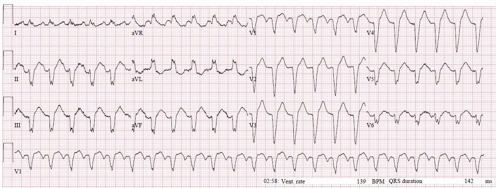
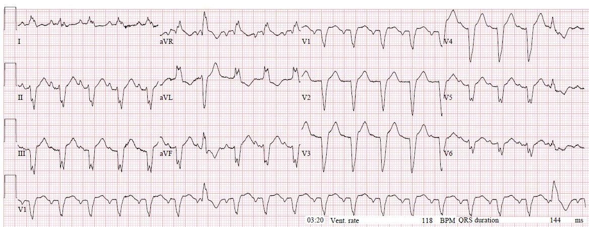
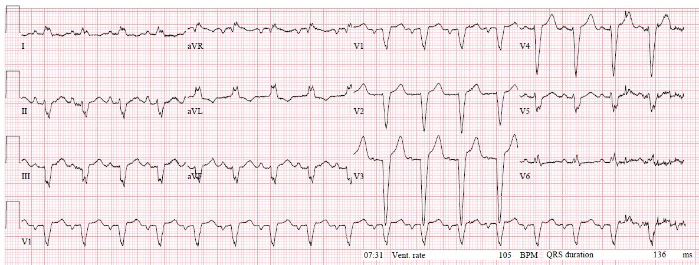
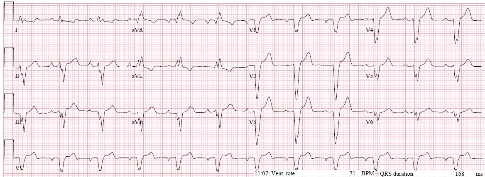
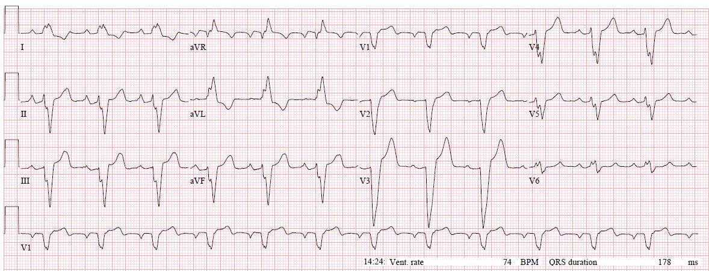
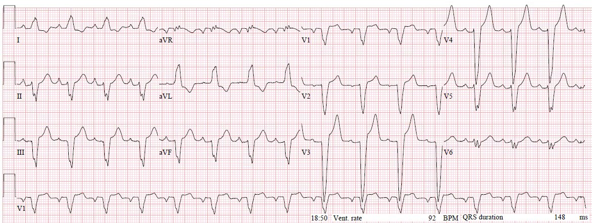
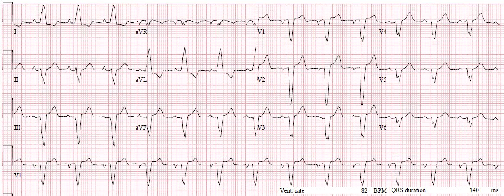

26/10/2017 — Kiểm tra gần như toàn bộ các kỹ năng đọc nhịp điện tâm đồ quan trọng nhất của bạn với ca bệnh này
Bản dịch tiếng Việt của bài "Test almost all of your most important ECG rhythm interpretation skills with this case." – Dr. Smith’s ECG Blog. Giữ nguyên toàn bộ 7 hình ảnh của bản gốc.
Gửi bởi một người ẩn danh, Meyers viết, Smith biên tập:
Một phụ nữ 70 mấy tuổi có tiền sử tăng huyết áp (HTN) thức dậy lúc khoảng 2 giờ sáng vì khó thở dữ dội. Đội cấp cứu ngoài viện (EMS) thấy bệnh nhân suy hô hấp mức độ trung bình, giảm oxy máu khi thở khí trời, ran lan tỏa. Đã bắt đầu thở CPAP. Không có điện tâm đồ trước viện, nhưng theo báo cáo cho thấy nhịp nhanh QRS rộng đều tần số khoảng 150 nhịp/phút. Đã tiêm 150mg amiodarone vì nghĩ là VT, không thấy hiệu quả rõ rệt.
Bà đến khoa cấp cứu (ED) lúc 2:52 sáng. Tri giác bình thường, suy hô hấp mức độ trung bình với ran lan tỏa, tần số thở 30 lần/phút, huyết áp ban đầu 129/60. Độ bão hòa oxy ở mức 90 mấy phần trăm. Siêu âm tại giường cho thấy chức năng thất trái toàn bộ giảm nặng và đường B (B-lines) lan tỏa hai bên.
Đây là điện tâm đồ ban đầu của bà (không có điện tâm đồ cũ để so sánh, bà đang đi nghỉ từ nơi khác đến thăm gia đình, không có thêm tiền sử nào khác):


Tại thời điểm này của ca bệnh, bạn đối mặt với một số câu hỏi rất thú vị và khó:
1) Bệnh nhân ổn định hay không ổn định?
2) Bạn nghĩ các điện tâm đồ cho thấy gì? Nhịp là gì?
3) Bạn có nghĩ nhịp là nguyên nhân gây ra triệu chứng không? Về mặt sinh lý bệnh, điều gì đang xảy ra với bệnh nhân này?
4) Với những điều trên, bạn sẽ xử trí tiếp thế nào?
Ổn định hay không ổn định:
Theo định nghĩa của ACC/AHA, bệnh nhân có thể được gọi là “không ổn định” dựa trên sự hiện diện của suy tim cấp (giả sử bạn quy suy tim cấp cho nhịp).
Dù sao đi nữa, bệnh nhân này tri giác bình thường, dung nạp được BiPAP và không còn thiếu oxy — bà có đang cận ngừng tim không?? Không. Bạn còn chút thời gian.
Điện tâm đồ:
Nhịp nhanh QRS rộng đều tần số ~140 nhịp/phút. Chẩn đoán phân biệt khi đó là VT, SVT kèm dẫn truyền bất thường, nhịp nhanh xoang kèm dẫn truyền bất thường, hoặc bất kỳ nhịp nào trong số này có hoặc không kèm tăng kali máu – yếu tố luôn quan trọng. Hình thái phức bộ QRS rất giống LBBB, chỉ có ngoại lệ là chuyển đạo V5 và V6, vốn âm thay vì dương như thường thấy ở LBBB khi điện cực đặt hoàn hảo. Tuy nhiên, I và aVL có sóng R đơn pha điển hình của LBBB — việc V6 không phù hợp với I và aVL làm nghi ngờ có thể đặt sai vị trí điện cực, vì bình thường chúng có chung một hướng trục tổng quát.
Phần đầu QRS cho thấy khử cực nhanh, với thời gian từ khởi đầu QRS đến đáy sóng S ở V1-V4 khoảng 40ms (nhìn chung đủ nhanh để gợi ý có sử dụng hệ thống dẫn truyền chuyên biệt, thay vì sự lan truyền chậm chạp từ tế bào sang tế bào trong cơ tim của một PVC; dưới 50 ms là điển hình cho LBBB thật). Với hình thái LBBB gần như hoàn hảo và khử cực QRS ban đầu rất nhanh, phức bộ QRS này rất có khả năng được tạo ra do khử cực xuôi dòng theo nhánh phải, nghĩa là nó hoặc là nhịp trên thất kèm LBBB, hoặc xuất phát từ chính nhánh phải (hiếm).
Ở V1, giữa các phức bộ QRS có một sóng lệch âm lớn rõ rệt, nhiều khả năng là hoạt động nhĩ. Dùng dải nhịp V1 để dò hoạt động này sang các chuyển đạo khác, bạn có thể thấy một “bướu thêm” trên sóng T ở vị trí tương ứng tại chuyển đạo V6 và II. Điều này cũng đặt ra câu hỏi liệu có thêm một loạt sóng P/sóng cuồng nhĩ ẩn trong QRS hay không. Rất khó nói. Chuyển đạo Lewis là một lựa chọn có thể giúp ích trong tình huống này bằng cách làm rõ sóng P hoặc bộc lộ sóng cuồng nhĩ.
Bất chấp các đặc điểm này, không có cách nào loại trừ VT dựa trên điện tâm đồ này. Ngoài QRS rộng, không có đặc điểm nào đặc biệt gợi ý tăng kali máu. Không có dấu hiệu thiếu máu cục bộ chồng lên phức bộ QRS bất thường này, với các đoạn ST-T ngược hướng phù hợp.
Sinh lý bệnh:
Có ít nhất hai cách giải thích chính cạnh tranh nhau cho toàn bộ bệnh cảnh lâm sàng của bệnh nhân này:
1) SVT/VT khởi phát cấp tính nguyên phát, trên nền chức năng thất trái kém chưa được phát hiện — suy tim cấp kèm phù phổi
2) Phù phổi cấp nguyên phát do tăng huyết áp (“SCAPE” — phù phổi cấp kịch phát do cường giao cảm, Sympathetic Crashing Acute Pulmonary Edema), được tạo thuận lợi bởi tiền sử tăng huyết áp kèm chức năng thất trái kém; nhịp nhanh xoang bù trừ kèm dẫn truyền lệch hướng sẵn có từ nền hoặc liên quan tần số
Cả hai cách giải thích cũng đều có thể do thiếu máu cục bộ từ hội chứng vành cấp (ACS) gây ra, hoặc có thể dẫn tới thiếu máu cục bộ do tăng nhu cầu.
Những yếu tố có thể giúp phân biệt:
- Một phụ nữ 75-80 tuổi theo lý thuyết có tần số nhịp nhanh xoang tối đa khoảng 140-150 nhịp/phút (220-75=145). Tần số 139 nhịp/phút của bệnh nhân này không nhanh tới mức khiến ta nghi ngờ nhịp nhanh xoang dựa trên tần số.
- SVT thường, nhưng không phải luôn luôn, nhanh hơn 140 nhịp/phút. Ngoại lệ dĩ nhiên là cuồng nhĩ, thường có tần số 135-160 nhịp/phút.
- Tần số 139 nhịp/phút khó có thể gây tổn hại huyết động ở một tim trẻ có cấu trúc bình thường (không phải trường hợp ở đây)
- SCAPE thường biểu hiện với nhịp nhanh xoang
Những yếu tố không giúp phân biệt:
- Siêu âm tại giường cho thấy chức năng thất trái kém và đường B lan tỏa không giúp phân biệt hai khả năng này, vì chức năng thất trái kém và phù phổi có thể gặp ở cả hai. Các dấu hiệu này phù hợp với bệnh tim nền dễ dẫn tới “Sympathetic Crashing Acute Pulmonary Edema” (phù phổi cấp kịch phát do cường giao cảm, “SCAPE”), nhưng chúng cũng giúp giải thích vì sao một rối loạn nhịp nguyên phát với tần số 139 nhịp/phút lại có thể dung nạp kém đến vậy.
- Huyết áp “bình thường” hoặc “giả bình thường”. Một số người sẽ nói huyết áp 129/60 là chưa đủ cao để có SCAPE. Dĩ nhiên, bà đã được truyền nitroglycerin liên tục (NTG) và thở BiPAP. Đo huyết áp bên ngoài cũng không đáng tin cậy, nhưng ngay cả khi đó là áp lực động mạch thật, nó vẫn có thể không giúp phân biệt ở đây. Khi một bệnh nhân suy tim cấp có huyết áp “bình thường” hoặc thấp, đó có thể là sốc tim, đặc biệt ở bệnh nhân nhiều khả năng có tăng huyết áp từ nền.
- Sốc tim có thể là hậu quả của tần số, hoặc tần số có thể là đáp ứng phù hợp, đúng như dự kiến, với sốc tim, phù phổi và phản ứng giao cảm của SCAPE.
Xử trí bệnh nhân này như thế nào:
Bạn phải hoặc chọn xem mình có nghĩ nhịp là nguyên nhân hay không, hoặc tiến hành xử trí dựa trên việc thừa nhận đồng thời cả hai khả năng. Các lựa chọn cho bệnh nhân có nhịp nhanh QRS rộng đều kèm một số dấu hiệu tổn hại huyết động nhưng chưa cận ngừng tim này gồm:
Can thiệp ngay vào nhịp:
– Sốc điện chuyển nhịp đồng bộ
– Adenosine và/hoặc nghiệm pháp cường phế vị
– Chuyển nhịp bằng thuốc (procainamide, amiodarone, v.v.)
Các lựa chọn này đều kèm một nguy cơ nhỏ (an thần để sốc điện chuyển nhịp, nguy cơ rất nhỏ nhịp xấu đi với adenosine, hạ huyết áp hoặc nhịp xấu đi với amiodarone/procainamide), đồng thời có lợi ích tiềm năng là chuyển nhịp (nếu nhịp không phải nhịp nhanh xoang) và cung cấp thêm thông tin chẩn đoán về nhịp.
Theo dõi bệnh nhân khi đang truyền nitroglycerin liên tục và thở BiPAP trong một thời gian ngắn (~10 phút tại giường):
Theo dõi xem có cải thiện với các can thiệp đang tiến hành hay không, thu thập thêm bệnh sử hoặc thông tin từ hồ sơ bệnh án điện tử (EMR), các điện tâm đồ liên tiếp, và các đặc điểm tại giường giúp phân biệt nhịp, bao gồm thay đổi tần số, thỉnh thoảng có nhát bị rớt làm bộc lộ sóng cuồng nhĩ, v.v. Nguy cơ của chiến lược này là kéo dài tổn hại huyết động và thiếu máu cục bộ do tăng nhu cầu nếu nhịp là nguyên nhân, còn lợi ích là có thể tránh được nguy cơ của các can thiệp tức thời nói trên nếu nhịp là nhịp nhanh xoang và không phải nguyên nhân.
Quan điểm cá nhân của tôi (Meyers), với thông tin hiện có trong ca này, là bất kỳ lựa chọn nào nêu trên đều hợp lý nếu bạn không thể xác định ngay từ đầu rằng đây là nhịp xoang. Đặc biệt, sốc điện chuyển nhịp mang lại một thử thách chẩn đoán nhanh và hiệu quả trong tình huống này, và rất an toàn khi được thực hiện bởi các bác sĩ cấp cứu được đào tạo tốt. Mặt khác, bệnh nhân không cận ngừng tim và bệnh cảnh nghe rất giống những ca SCAPE thức dậy lúc 3 giờ sáng gần như hằng ngày mà tất cả chúng ta đều quá quen thuộc, những người cải thiện nhanh trong 10 phút đầu sau khi đến viện với nitroglycerin và thở máy không xâm nhập (NIV).
Bình luận của Smith: Tôi nghĩ sóng P ở chuyển đạo V1 và II rất rõ, và đây là nhịp nhanh xoang. Tôi sẽ không sốc điện chuyển nhịp. Bác sĩ cấp cứu luôn có cám dỗ phải làm một điều gì đó, nhưng chúng ta phải cưỡng lại cám dỗ đó khi việc làm gì đó lại khiến tình hình tệ hơn. Hãy cho bệnh nhân một chút thời gian và hỗ trợ, bạn sẽ thấy tần số từ từ giảm xuống, điều KHÔNG xảy ra ở các nguyên nhân vào lại khác của nhịp nhanh QRS rộng, như VT, SVT kèm dẫn truyền lệch hướng hay cuồng nhĩ. Chỉ có nhịp tự động là nhịp nhanh xoang mới có tần số giảm dần từ từ. Nếu bệnh nhân xấu đi, đó là lúc đặt nội khí quản.
Quay lại ca bệnh:
BiPAP và truyền nitroglycerin liên tục liều thấp được tiếp tục khi đến viện. Ê-kíp khoa cấp cứu chia rẽ ý kiến về việc đây là VT hay SVT kèm dẫn truyền lệch hướng, nhưng không ai nghĩ đó là nhịp nhanh xoang và họ thống nhất nghi ngờ rằng nhịp là nguyên nhân gây suy tim cấp.
Bác sĩ nội trú phụ trách ca cho biết họ đã theo dõi tần số tim trong khoảng 15 phút và nó chỉ dao động giữa 138 và 142 nhịp/phút. Sau đó họ an thần bằng etomidate và tiến hành sốc điện chuyển nhịp, trong suốt quá trình vẫn tiếp tục BiPAP và nitroglycerin. Sau các can thiệp này, đây là điện tâm đồ kế tiếp có được:


Sau an thần, BIPAP và sốc điện, tần số tiếp tục giảm dần, chững lại quanh 105-110 nhịp/phút và duy trì ở đó trong suốt thời gian ở khoa cấp cứu. BiPAP được cai khoảng một giờ sau đó.
Đây là điện tâm đồ ghi lại:


Đáng tiếc là việc giảm tần số sau sốc điện cũng không giúp phân biệt SVT với SCAPE kèm nhịp nhanh xoang bù trừ: nếu là SVT, cú sốc có thể đã chuyển nhịp và sau đó làm giảm tần số; nếu là SCAPE kèm nhịp nhanh xoang bù trừ, thì việc giảm tần số hoàn toàn có thể giải thích bằng điều trị đang tiếp diễn với BiPAP, truyền nitroglycerin liên tục, an thần bằng etomidate đã lấy đi cơn bùng phát giao cảm vốn đang nuôi vòng phản hồi dương của SCAPE và nhịp nhanh xoang bù trừ.
Nhìn lại, tôi tin rằng SCAPE kèm nhịp nhanh xoang bù trừ có khả năng cao hơn nhiều là tình huống ở đây, dựa trên hình thái QRS và sóng P giống hệt thấy về sau khi đã chắc chắn là nhịp xoang.
Kết cục ca bệnh, Phần 1:
Troponin T tăng từ mức không phát hiện được lúc đầu lên khoảng 0.17 ng/mL trong vài giờ đầu rồi lại giảm. X-quang ngực cho thấy sung huyết mạch máu phổi nặng và phù phổi. Chụp CT theo quy trình thuyên tắc phổi không cho thấy PE cấp nào. Bà được nhập đơn vị chăm sóc trung gian tim mạch (step-down).
Thông tim cho thấy bệnh động mạch vành (CAD) tối thiểu (hẹp 10-30% ở một số mạch nhỏ, không có tổn thương nào được xem là thủ phạm cấp) và chức năng tâm thu toàn bộ giảm nặng với EF 29%.
Trong vài ngày đầu nằm viện, bà được ghi nhận có phù phổi cấp kịch phát (flash pulmonary edema) gần như mỗi đêm vào khoảng 1-3 giờ sáng. Bà được dùng lasix với liều tăng dần và cải thiện, rồi được cho lasix 40mg ngày 2 lần (BID) kéo dài vô thời hạn. Hồ sơ từ nơi khác chỉ cho thấy thêm tiền sử đái tháo đường type 2 (đã dùng metformin), bệnh này cũng được tối ưu hóa điều trị và liều metformin được tăng lên. Bà xuất viện vào ngày nằm viện thứ 9.
Ca bệnh, Phần II: Bệnh nhân quay lại khoa cấp cứu:
Nhưng có vẻ bệnh nhân này nhất quyết không ngừng dạy chúng ta về điện tâm đồ trong kỳ nghỉ của bà, và bà quay lại 1 tuần sau với một cơn đau ngực cấp kèm khó thở, trước đó có vài ngày buồn nôn và tiêu chảy. Sinh hiệu và khám không có gì đáng chú ý, không suy hô hấp. Cơn đau của bà đã giảm ngay trước khi ghi điện tâm đồ ban đầu:


Dĩ nhiên là vẫn có thể bị tắc mạch vành cấp dù vừa mới thông tim cho kết quả “không tắc nghẽn”. Có nhiều nguyên nhân, trong đó có đơn giản là một ca nứt vỡ mảng xơ vữa kiểu kinh điển ở một tổn thương hẹp dưới 30%. Chưa kể đến khả năng có xơ vữa ngoài lòng mạch, co thắt mạch vành, hoặc biến chứng do chính lần thông tim gây ra.
Nhưng không có tiêu chuẩn Sgarbossa gốc hay cải biên nào. Nhịp xoang kèm LBBB (gần như hoàn hảo). Các thành phần hình thái của QRS giống hệt so với điện tâm đồ lúc ra viện trước đó, nhưng vẫn có một khác biệt rất quan trọng ở phức bộ QRS. Bạn có thấy không?
Nó rộng hơn đáng kể. Thời gian QRS trước đây luôn ở mức 136-142 msec trong lần nhập viện trước. Hôm nay là 168 msec. Vì vậy điều đó phải bật lên chuông báo “dừng lại bắt buộc” trong tư duy của bạn về tăng kali máu (hyperK), thôi thúc bạn đi tìm các dấu hiệu khác của tăng kali máu. Sóng T không nhọn hơn rõ rệt so với trước. Nhịp là nhịp xoang, không phải nhịp bộ nối hay thấp hơn. Nhưng khoảng PR là 200 msec, so với 164 trên điện tâm đồ ra viện cách đây 1 tuần. Như vậy chúng ta có QRS rộng hơn mới xuất hiện và khoảng PR dài hơn mới xuất hiện. Đây là bằng chứng mạnh nhưng tinh tế của tăng kali máu và phải được xử trí, đặc biệt ở bất kỳ bệnh nhân nào than yếu mệt. Nói thêm để bạn biết, còn có QRS phân mảnh mới xuất hiện, gợi ý nhồi máu cũ và không liên quan đến tăng kali máu. Đây có thể đơn giản chỉ là hình dạng của QRS khi nó bị kéo giãn ra, làm lộ ra các thành phần của hình thái QRS mà trước đây không nhìn thấy được.
Các thay đổi do tăng kali máu đã không được nhận ra, và chưa có điều trị nào được bắt đầu.
Kết quả xét nghiệm ban đầu trả về bất thường rõ rệt:
Natri (Na) = 114
Kali (K) *chưa có kết quả*
Clo (Cl) = 82
Bicarbonat = 9
Glucose máu = 209
Creatinin = 1.24 (nền 0.80)
Khoảng trống anion = 21
Troponin T = không phát hiện được
Lactat 3.8
Thêm một ví dụ cho thấy vì sao bạn không thể chờ nồng độ K để chẩn đoán và điều trị tăng kali máu. Dĩ nhiên, lý do quan trọng hơn là bệnh nhân có thể mất bù trước khi có kết quả (nếu bạn đủ may mắn để có được một kết quả thật, không bị sai, trả về). Điều này được ủng hộ bởi các phát hiện của Durfey và cs. trong nghiên cứu đoàn hệ hồi cứu mới nhất về tăng kali máu, sẽ sớm được điểm lại trên blog này.
Tăng kali máu vẫn chưa được nghi ngờ, và người ta lo rằng các giá trị xét nghiệm rất bất thường này là sai, vì bệnh nhân trông cực kỳ khỏe và thực ra không có triệu chứng gì ngoài tình trạng yếu mệt mơ hồ kéo dài.
Xét nghiệm được gửi lại để làm rõ, và có kết quả lúc 1400 (khoảng 3 giờ sau khi đến viện):
Natri (Na) = 118
Kali (K) 7.2
Clo (Cl) = 81
Bicarbonat = 12
Glucose máu = 209
Creatinin = 1.42
Khoảng trống anion = 21
Khi đã có kết quả K, tăng kali máu mới được nghi ngờ và một điện tâm đồ ghi lại được thực hiện:


Lúc này bệnh nhân được dùng 2gm calci gluconat, 500 mL Ringer lactat, 40mg lasix tĩnh mạch, 10U insulin và 10mg albuterol khí dung. Sau đó cũng cho Kayexalate.
Điện tâm đồ ghi lại vài giờ sau:


May mắn là bà không gặp bất kỳ biến cố xấu đi nào về nhịp hay tim mạch trước khi được điều trị tăng kali máu, và việc điều trị đã thành công trong việc hạ K. Xét nghiệm hai giờ sau điều trị cho thấy K = 7.0, gần như không cải thiện so với 7.2, ngụ ý rằng K lẽ ra đã còn tăng cao hơn nữa nếu không có điều trị tích cực như vậy. Hai giờ sau đó K đo được là 5.9, và tiếp tục giảm từ đó.
Bà được chuyển đến đơn vị hồi sức tích cực nội khoa (MICU), tại đây bà tiếp tục cải thiện với điều trị hỗ trợ, không cần lọc máu hay các can thiệp tích cực khác. Bà được xuất viện vào ngày thứ 6. Biểu hiện và các bất thường xét nghiệm của bà được giải thích có lẽ là do nhiều yếu tố, bao gồm:
1) bắt đầu dùng lisinopril 5mg và spironolactone 25 mỗi ngày (đã được chỉnh liều song song với lasix trong lần nhập viện trước)
2) khả năng nhiễm toan lactic do metformin trong bối cảnh liều metformin vừa được tăng gần đây, với các yếu tố khởi phát có thể có như lượng thuốc cản quang tĩnh mạch đã dùng cho chụp CT tìm PE và thông tim mạch vành; dẫn đến nồng độ acid lactic cao và kèm theo buồn nôn, nôn, mệt mỏi, mất nước, từ đó làm giảm thanh thải lisinopril/spironolactone, v.v.
3) khả năng DKA với đường huyết bình thường (euglycemic DKA) (beta-hydroxybutyrat = 0.38 trong xét nghiệm ban đầu)


Bà đã hồi phục tốt, nhưng có lẽ đây không phải là kỳ nghỉ thư giãn bên gia đình mà bà mong muốn.
Những điểm cần học:
- Phân loại “ổn định vs không ổn định” theo các hướng dẫn hiện nay dễ gây hiểu lầm; nếu bệnh nhân không ở tình trạng sắp ngừng tim hay nguy kịch, có thể có nhiều thời gian hoặc nhiều lựa chọn hơn so với những gì ACLS khiến bạn tin.
- Phân biệt nguyên nhân nhịp của các nhịp nhanh QRS rộng có thể rất khó, nhưng việc xử trí vẫn có thể tiến hành an toàn mà không cần biết chính xác nhịp là gì.
- Hãy tập thói quen quan sát lúc điện cực được đặt. Đừng để việc đặt sai vị trí điện cực khiến những ca này càng khó hơn.
- Sốc điện nhầm một nhịp nhanh xoang (ST) còn hơn bỏ sót VT, nhưng trong những tình huống như thế này có thể có thêm chút thời gian để cân nhắc hết các lựa chọn của bạn.
- Tầm quan trọng của việc nhận ra và điều trị tăng kali máu không bao giờ có thể bị nói quá.